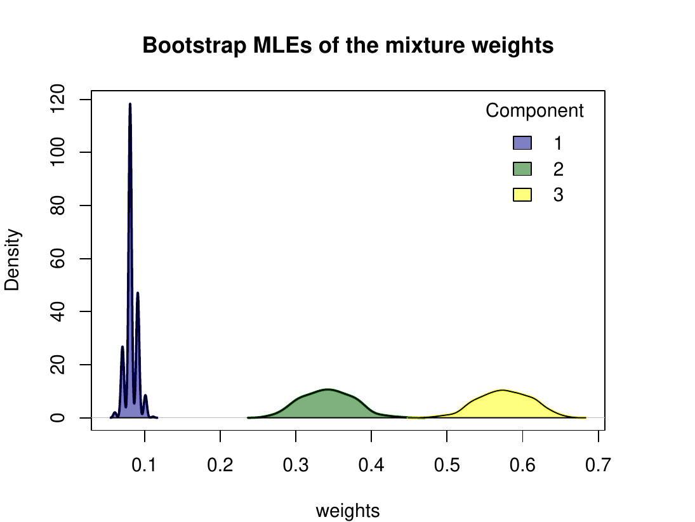

1 Introduction
Ranking data play a pivotal role in numerous research and practical domains, where the focus is on comparing and ordering a set of \(n\) items according to personal preferences or other relevant criteria. From market surveys to sports competitions, from academic assessments to online recommendation systems, rankings are ubiquitous in modern society to capture human choice behaviors or, more generally, ordinal comparison processes in various contexts.
Ranking data analysis has attracted significant attention, as evidenced by the extensive literature on the subject (see Critchlow et al. 1991; Marden 1995 for fundamental reviews) and by the development of a broad spectrum of probabilistic models designed to capture meaningful choice patterns and quantify estimation uncertainty. Traditionally, four main classes of parametric models have been identified, each representing a distinct ranking generative process. The first category, order statistics models (OSs), is originally attributed to (Thurstone 1927) and conceptualizes rankings as arising from the ordering of latent item utilities. The second, paired comparison models, is exemplified by the Bradley-Terry model (BT) proposed by Bradley and Terry (1952) and is based on the possibility to decompose a ranking sequence into the corresponding set of pairwise comparisons. The third category, stagewise models, breaks the ranking process into sequential stages and is well represented by the popular Plackett-Luce model (PL) introduced by (Luce 1959) and (Plackett 1975). Finally, distance-based models, often referred to as Mallows models (MMs), trace their origins to the seminal work by Mallows (1957). In this paper, we focus on the last class, which provides an ideal option for applications where a meaningful consensus ranking can be identified in the sample and, consequently, offers a valuable parametric tool for rank aggregation tasks (Marden 1995). For further insights into probabilistic ranking models and their unique characteristics, that can support the critical choice of suitable parametric families for specific real contexts, the reader is referred to Liu et al. (2019) and Alvo and Yu (2014).
The MM is based on the assumption that a modal consensus ranking of the \(n\) items exists in the population, effectively capturing the collective preferences. Under this framework, the likelihood of observing any particular ranking decreases as its distance from the consensus increases. While the distance measure in the MM induces distinct probabilistic models, it only needs to satisfy minimal properties. This simplicity offers researchers remarkable flexibility to choose the distance that best fits their scientific context. For example, Kendall and Cayley distances are well suited for sorting problems, Hamming works well in coding theory, and Spearman distance is particularly suitable for applications involving human preferences or social choice (Diaconis 1988). Traditionally, the choice of the distance in the MM was mainly driven by computational considerations, specifically the availability of a closed-form expression for the model normalizing constant (or partition function). This favored the use of Kendall, Cayley, and Hamming distances, while the Spearman distance has been relatively underexplored due to its perceived intractability, despite its relevance in preference domains. However, Crispino et al. (2023) recently demonstrated that the Spearman distance is a metric that combines both computational feasibility and interpretability. By leveraging the unique properties of the Spearman distance, and by means of a novel approximation of the model partition function, the authors addressed the critical inferential challenges that historically limited its application. Their approach enabled the development of an efficient strategy to fit the MM with Spearman distance (MMS) for datasets with arbitrary forms of partial rankings. Moreover, they extended the model to finite mixtures, allowing the capture of possible unobserved sample heterogeneity.
Clustering ranking data to detect and characterize groups with similar preferences has long been a major motivation for extending traditional methods beyond their basic forms. This practical need is reflected in the fact that nearly all R packages dedicated to ranking analysis include clustering methods. From a methodological perspective, the clustering problem has been tackled using both model-based strategies and machine learning approaches. For example, the PLMIX package (Mollica and Tardella 2020) fits finite PL mixtures for partial top rankings within the Bayesian framework (Mollica and Tardella 2017), which notably recovers the maximum likelihood estimation (MLE) described in (Gormley and Murphy 2006) as a special case when a noninformative prior is specified. For the same parametric class, the PlackettLuce package (Turner et al. 2020) implements MLE procedures for generalizations of the PL model that are capable of handling partial and tied rankings, as well as including covariates to achieve model-based partitioning via PL trees. Concerning OSs, the StatRank package addresses the estimation of finite mixture generalizations from both full and partial rankings through the generalized method of moments (Soufiani and Chen 2015). Additionally, the R package Rankcluster (Jacques et al. 2014), offers an innovative model-based clustering approach through mixtures of Insertion Sort Rank data models (Jacques and Biernacki 2014), which is able to handle partial rankings with arbitrary patterns of incompleteness and, if needed, with multivariate (hierarchical) structures. An additional contribution to rankings with missing data is provided by the prefmod package (Hatzinger and Dittrich 2012), which primarily analyzes preference data in the form of paired comparisons, hence also rankings as a by-product, by using the BT and extensions thereof to accommodate ties, subject- and item-specific covariates, as well as partial observations with different censoring forms and missingness processes. However, the extension proposed in Hatzinger and Dittrich (2012) for clustering heterogeneous data relies on the introduction of non-parametric random-effects models that, in the case of rankings, are implemented only for completely-observed sequences (Hatzinger and Maier 2023).
Regarding the availability of software which is more related to our proposal, one can first notice that only a few packages of the Comprehensive R Archive Network (CRAN) implement MMs and generalizations thereof. BayesMallows (Sørensen et al. 2020) is the unique package adopting the Bayesian perspective to perform inference for the MM and its finite mixture extension. The flexibility of BayesMallows stands in the wide range of supported distances (including Spearman) and ranked data formats (complete and partial rankings, as well as pairwise comparisons). Moreover, BayesMallows provides estimation uncertainty by building posterior credible sets for the model parameters. Although Bayesian inference of ranking data is effectively addressed, the R packages adopting the frequentist perspective provide users with less flexibility and computational performance. For example, pmr (Lee and Yu 2013) performs MLE of several ranking models, including the MM with Kendall, Footrule, and Spearman distances. However, despite the variety of parametric distributions, pmr does not handle partial rankings nor mixtures. Additionally, the estimation routines require the enumeration of all \(n!\) permutations for the global search of the consensus ranking MLE and the naïve computation of the partition function, implying that the analysis of ranking datasets with \(n\geq 12\) items is unfeasible. The rankdist package (Qian and Yu 2019) fits mixtures of MMs with various basic and weighted metrics (Lee and Yu 2012), including the Spearman, on a sample of either full or top-\(k\) partial rankings. While the implementation for the Kendall distance is highly efficient, it shares similar drawbacks with pmr, since the partition function of the MMS is computed by summing over all \(n!\) permutations, and the MLE of the consensus ranking is obtained through a time-consuming local search. As a result, the procedures can be highly demanding, especially in mixture model applications. Moreover, the package does not support the analysis of full rankings with \(n\geq12\) items or of top-\(k\) rankings with \(n\geq8\) items. Other packages related to the MM, but limited to the Kendall distance, are RMallow (Gregory 2020), which fits the MM and mixtures thereof to both full or partially-observed ranking data, and ExtMallows (Li et al. 2018), which supports the MM and the extended MM (Li et al. 2020).
Our review underscores that most of the available packages for frequentist estimation of the MM focus on distances admitting a convenient analytical expression of the model normalizing constant (more often, the Kendall), in the attempt to simplify the estimation task. Moreover, regardless of the chosen metric, these packages face common limitations, particularly in handling large datasets and partial rankings, typically restricted to top-\(k\) sequences. These computational constraints impose restrictions on the sample size, the number of items, and the censoring patterns they can feasibly handle. Finally, the current implementations generally lack methods for quantifying MLE uncertainty, particularly for the consensus ranking or when a finite mixture is assumed.
MSmix efficiently enlarges the current suite of methods for model-based clustering of full and partial rankings via mixture-based analysis, by achieving several methodological and computational advances that overcome the practical limitations experienced with the existing packages, namely: 1) implementation of a recent normalizing constant approximation and of the closed-form MLE of the consensus ranking, to allow inference for the MMS even with a large number of items; 2) analysis of arbitrary forms of incompleteness in the observed sample of partial rankings via data augmentation strategies; 3) availability of routines for measuring estimation uncertainty of all model parameters, through bootstrap and asymptotic confidence intervals (CIs); 4) possible parallel execution of the Expectation-Maximization (EM) algorithms over multiple starting points, to better and more efficiently explore the critical mixed-type parameter space.
The paper is organized as follows. In Section 2, we first provide the methodological background of the MMS specification and its finite mixture extension within the frequentist domain. We then detail the approaches considered for the quantification of inferential uncertainty. Section 3 outlines the package architecture, the main computational aspects, and shows a comparison with existing packages. Section 4 represents the core part of the paper, illustrating the usage of the routines included in MSmix, with applications to brand new ranking datasets and simulations. Finally, Section 5 discusses possible directions for future releases of our package.
2 Methodological background
In this work, we consider ranking experiments where the same set of \(n\) items is presented to the assessors for comparative evaluation. Respondents can provide either a full ranking, by completely and uniquely attributing the \(n\) positions to the items, or a partial ranking, by assigning distinct positions only to a subset of the items and leaving the attribution of the remaining ranks undetermined. The novel R package MSmix implements finite mixtures of MMS (MMS-mix) for full and partial rankings with the following key features: i) the unranked items are treated as missing data and are implicitly assumed to occupy the non-assigned positions; ii) missing data may occur at any position within the observed partial ranking, i.e., not necessarily in bottom positions as in the top-\(k\) rankings; iii) inferential procedures rely on the implementation of EM algorithms assuming that the missing data generative process is Missing at Random (MAR), see (Little 2011) and references therein for a general discussion on ignorable missingness in likelihood-based methods.
The Mallows model with Spearman distance and its mixture extension
Let \(\boldsymbol{\mathbf{r}}=(r_1,\dots,r_n)\) be a full ranking of \(n\) items, with the generic entry \(r_i\) indicating the rank assigned to item \(i\). A full ranking \(\boldsymbol{\mathbf{r}}\) is a permutation of the first \(n\) integers and belongs to the finite discrete space of permutations, \(\mathcal{P}_n\). The MMS assumes that the probability of observing the ranking \(\boldsymbol{\mathbf{r}}\) is \[ \mathbb{P}(\boldsymbol{\mathbf{r}}\,\vert \boldsymbol{\mathbf{\rho}},\theta) =\frac{e^{-\theta\, d(\boldsymbol{\mathbf{r}},\boldsymbol{\mathbf{\rho}})}}{Z(\theta)} \qquad\qquad\boldsymbol{\mathbf{r}}\in\mathcal{P}_n, \] where \(\boldsymbol{\mathbf{\rho}}\in\mathcal{P}_n\) is the consensus ranking, \(\theta\in\mathbb{R}_0^+\) is the concentration, \(d(\boldsymbol{\mathbf{r}},\boldsymbol{\mathbf{\rho}})=\sum_{i=1}^n(r_i-\rho_i)^2\) is the Spearman distance, and \(Z(\theta)=\sum_{\boldsymbol{\mathbf{r}} \in \mathcal{P}_{n}} e^{-\theta\, d(\boldsymbol{\mathbf{r}},\boldsymbol{\mathbf{e}})}\), with \(\boldsymbol{\mathbf{e}}=(1, 2, ..., n)\), is the normalizing constant.
Let \(\underline{\boldsymbol{\mathbf{r}}}=\{\boldsymbol{\mathbf{r_1}},\dots,\boldsymbol{\mathbf{r_N\}}}\) be a random sample of \(N\) full rankings drawn from the MMS and \(N_l\) be the frequency of the \(l\)-th distinct observed ranked sequence \(\boldsymbol{\mathbf{r_l}}\), such that \(\sum_{l=1}^L N_l=N\). As shown in (Crispino et al. 2023), the observed-data log-likelihood can be written as follows \[\begin{split} \ell(\boldsymbol{\mathbf{\rho}},\theta\vert\underline{\boldsymbol{\mathbf{r}}}) =-N\left(\log{Z(\theta)}+2\theta\left(c_n-\boldsymbol{\mathbf{\rho^T}}{\boldsymbol{\mathbf{\bar r}}}\right)\right), \end{split}\] where \(c_n=n(n+1)(2n+1)/6\), the symbol \(^T\) denotes the transposition (row vector), \({\boldsymbol{\mathbf{\bar{r}}}}=(\bar{r}_1,\ldots,\bar{r}_n)\) is the sample mean rank vector whose \(i\)-th entry is \(\bar{r}_i=\frac{1}{N}\sum_{l=1}^LN_lr_{li}\), and \(\boldsymbol{\mathbf{\rho}}^T{\boldsymbol{\mathbf{\bar{r}}}}=\sum_{i=1}^n\rho_i\bar{r}_i\) is the scalar product. The MLE of the consensus ranking is given by the ranking arising from ordering the items according to their sample average rank, \[\hat{\boldsymbol{\mathbf{\rho}}}=(\hat\rho_1,\ldots,\hat\rho_i,\ldots,\hat\rho_n)\quad\text{with}\quad\hat\rho_i=\text{rank}(\bar{\boldsymbol{\mathbf{r}}})_i \,.\]
The MLE \(\hat\theta\) of the concentration parameter is the value equating the expected Spearman distance under the MMS, \(\mathbb{E}_\theta(D)\), to the sample average Spearman distance \(\overline{d}=\frac{1}{N}\sum_{l=1}^LN_ld(\boldsymbol{\mathbf{r}}_l,\hat{\boldsymbol{\mathbf{\rho}}})\). The root of this equation can be found numerically, provided that one can evaluate the expected Spearman distance, given by \[\mathbb{E}_{\theta}[D] = \frac{\sum_{\boldsymbol{\mathbf{r}} \in \mathcal{P}_{n}} d(\boldsymbol{\mathbf{r}},\boldsymbol{\mathbf{e}}) e^{-\theta\, d(\boldsymbol{\mathbf{r}},\boldsymbol{\mathbf{e}})}}{Z(\theta)}= \frac{\sum_{d\in\mathcal{D}_n}dN_d \,e^{-d\theta}}{\sum_{d\in\mathcal{D}_n}N_d \,e^{-d\theta}},\] with \(\mathcal{D}_n=\left\{d=2h\, : \, h\in\mathbb{N}_0\text{ and } 0\leq d\leq 2\binom{n+1}{3}\right\}\) and \(N_d=\vert\{\boldsymbol{\mathbf{r}}\in\mathcal{P}_{n}\,:\,d(\boldsymbol{\mathbf{r}},\boldsymbol{\mathbf{e}})=d\}\vert\). The exact values of the frequencies \(N_d\) are available for \(n\leq 20\) (sequence A175929 in the Online Encyclopedia of Integer Sequences). In order to tackle inference on rankings of a larger number of items, (Crispino et al. 2023) introduced an approximation of the Spearman distance distribution. In MSmix, we implement their strategy, so that when the normalizing constant and the expected Spearman distance cannot be computed exactly, inference targets an approximation. Algorithm 1 reported in Appendix A1 illustrates the steps described above.
In order to account for the unobserved sample heterogeneity typical in real ranking data and, more generally, to increase the model flexibility, an MMS-mix can be adopted. Under the MMS-mix, the sampling distribution is assumed to be \[ \mathbb{P}(\boldsymbol{\mathbf{r}}|\underline{\boldsymbol{\mathbf{\rho}}},{\boldsymbol{\mathbf{\theta}}},{\boldsymbol{\mathbf{\omega}}}) =\sum_{g=1}^G\omega_g\mathbb{P}(\boldsymbol{\mathbf{r}}\,|\boldsymbol{\mathbf{\rho}}_g,\theta_g) =\sum_{g=1}^G\omega_g\frac{e^{-2\theta_g\, \left(c_n-\boldsymbol{\mathbf{\rho}}_g^T\boldsymbol{\mathbf{r}}\right)}}{Z(\theta_g)}\qquad\qquad\boldsymbol{\mathbf{r}}\in\mathcal{P}_n, \] with \(\omega_g\) and \((\boldsymbol{\mathbf{\rho}}_g,\theta_g)\) denoting respectively the weight and the pair of MMS parameters of the \(g\)-th mixture component. (Murphy and Martin 2003) first proposed an EM algorithm to fit such mixture models, but the more efficient version described by (Crispino et al. 2023) is implemented in the MSmix package (Algorithm 2 in Appendix A1).
Inference on partial rankings
MSmix implements two schemes to draw inference from partial rankings with arbitrary types of censoring. One is the recent proposal of (Crispino et al. 2023), which extends the method originally described by (Beckett 1993) to the finite mixture framework. The key idea is to augment each distinct partially observed ranking \(\boldsymbol{\mathbf{r_l}}\) with the corresponding set \(\mathcal{C}(\boldsymbol{\mathbf{r_l}})\subset \mathcal{P}_n\) of compatible full rankings and then maximize the complete-data log-likelihood \[\label{eq:loglik_compl} \ell_c(\underline{\boldsymbol{\mathbf{\rho}}},{\boldsymbol{\mathbf{\theta}}},{\boldsymbol{\mathbf{\omega}}},\underline{\boldsymbol{\mathbf{z}}},\underline{\boldsymbol{\mathbf{r}}}^*\vert\underline{\boldsymbol{\mathbf{r}}}) =\sum_{m=1}^M\sum_{g=1}^GN_mz_{mg}\left(\log\omega_g-2\theta_g\left(c_n-{\boldsymbol{\mathbf{\rho}}^T_g}\boldsymbol{\mathbf{r}}^*_m\right)-\log Z(\theta_g)\right), \tag{1}\] where \(\boldsymbol{\mathbf{r}}^*_m\) is a generic full ranking belonging to \(\mathcal{C}(\boldsymbol{\mathbf{r_l}})\), \(N_m\) is its latent frequency, \(\sum_{m=1}^MN_m=\vert\cup_{l=1}^L\mathcal{C}(\boldsymbol{\mathbf{r_l}})\vert\), and \(\boldsymbol{\mathbf{z_m}} = (z_{m1},\dots, z_{mG})\) is its latent group membership. The algorithm to maximize (1) is outlined in Algorithm 3 in Appendix A1.
Algorithm 3 requires the computationally intensive construction and iterative computations on the sets \(\mathcal{C}(\boldsymbol{\mathbf{r_l}})\) associated to each partial observation. This typically demands a lot of memory, especially in the case of many censored positions (greater than 10, say) and large sample sizes. To address this issue, in MSmix we propose the use of a second scheme to draw inference on partial rankings, that uses a Monte Carlo (MC) step in place of the complete augmentation, giving rise to a MCEM-type algorithm (Wei and Tanner 1990). Let \(\kappa > 0\) be a tuning constant and \(\mathcal{I}_{s}\subset \{1,2,\dots,n\}\) be the subset of items actually ranked in the observed partial ranking \(\boldsymbol{\mathbf{r}}_s\).1 The core idea is to iteratively complete the missing ranks by sampling from the postulated MMS-mix conditionally on the current values of the parameters. Specifically, the MC step is designed as follows:
- MC step:
-
for \(s=1,\dots,N\), simulate \[\begin{aligned} \tilde{\boldsymbol{\mathbf{z}}}_s\,\vert\,\hat{\boldsymbol{\mathbf{z}}}_s&\sim\text{Multinom}\big(1,(\hat z_{s1},\dots,\hat z_{sG})\big) \label{eq:mcem1}\\ \end{aligned} \tag{2}\]
\[\begin{aligned} \tilde{\boldsymbol{\mathbf{r}}}_s\,\vert\,\underline{\boldsymbol{\mathbf{\rho}}},{\boldsymbol{\mathbf{\theta}}},\tilde{\boldsymbol{\mathbf{z}}}_s&\sim\sum_{g=1}^G\tilde{z}_{sg}\mathbb{P}\left(\boldsymbol{\mathbf{r}}|\boldsymbol{\mathbf{\rho}}_{g},\kappa\theta_{g}\right) \label{eq:mcem1bis} \end{aligned} \tag{3}\]
and complete the partial ranking \(\boldsymbol{\mathbf{r_s}}\) with the full sequence \(\boldsymbol{\mathbf{r}}^*_s=(r^*_{s1},\dots,r^*_{sn})\) such that \(r^*_{si}=r_{si}\) for \(i\in\mathcal{I}_s\) whereas, for \(i\notin\mathcal{I}_s\), the positions must be assigned to the items so that their relative ranks match those in \(\tilde{\boldsymbol{\mathbf{r}}}_s\).
The tuning constant in (3) serves to possibly increase the variability (for \(0<\kappa<1\)) or the concentration (for \(\kappa >1\)) of the sampled rankings around the current consensus ranking. The MCEM scheme is detailed in Algorithm 4 in Appendix A1.
Uncertainty quantification
To quantify estimation uncertainty, we constructed confidence sets using both asymptotic likelihood theory and bootstrap procedures.
Concerning the former approach, (Critchlow 1985) showed that, although the MMS-mix model is not regular due to the presence of the discrete component \(\mathcal{P}_n\) in the parameter space, the likelihood asymptotically behaves as if the consensus ranking parameters were known (Marden 1995). This result justifies the construction of CIs based on the asymptotic likelihood theory for the continuous parameters of the MMS-mix. In particular, we adopt the methodology described in Mclachlan and Peel (2000), which allows us to derive the standard errors from the output of the EM algorithm without an additional computational burden.
Since asymptotic CIs rely on large sample approximations, their validity depends on having a sufficiently large sample size. This is especially crucial in mixture models, where the required sample size must be very large (Mclachlan and Peel 2000). Therefore, we also employ a non-parametric bootstrap approach (Efron 1982). Specifically, for \(b=1,\dots,B\), we draw with replacement a sample \(\underline{\boldsymbol{\mathbf{r}}}^{(b)} =\{\boldsymbol{\mathbf{r_1^{(b)}}},\dots,\boldsymbol{\mathbf{r_N^{(b)}}}\}\) from the observed data \(\underline{\boldsymbol{\mathbf{r}}}\), and then compute the MLEs \(\hat{\boldsymbol{\mathbf{\rho}}}^{(b)}\) and \(\hat{\theta}^{(b)}\).2 Then, to summarize the uncertainty on \(\hat{\boldsymbol{\mathbf{\rho}}}\), we construct itemwise CIs, providing plausible sets of ranks separately for each item. To guarantee narrower intervals as well as a proper account of possible multimodality, these are obtained as highest probability regions of the \(n\) bootstrap first-order marginals, that is the sets of most likely ranks for each item at the given \(100(1-\alpha)\%\) level of confidence. We also provide a way to visualize the variability of the bootstrap MLEs through a heatmap of the corresponding first-order marginals, that is, the \(n\times n\) matrix whose \((i,j)-\)th element is given by \(\frac{1}{B}\sum_{b=1}^{B} \mathbb{I}_{[\hat{\rho}^{(b)}_i=j]}\). For the continuous concentration parameter, the bounds of the \(100(1-\alpha)\%\) CIs are determined as the quantiles at level \(\alpha/2\) and \((1 - \alpha/2)\) of the MLE bootstrap sample.
In the presence of multiple mixture components (\(G>1\)), the bootstrap CIs of the component-specific parameters are determined using the non-parametric bootstrap method applied on each subsample of rankings allocated to the \(G\) clusters (Taushanov and Berchtold 2019). We considered two approaches to perform this allocation: i) the deterministic Maximum A Posteriori (MAP) classification (separated method) or ii) a simulated classification at each iteration \(b\) from a multinomial distribution with the estimated posterior membership probabilities \(\underline{\hat{\boldsymbol{\mathbf{z}}}}\) (soft method). The key difference between the two methods is that the separated one ignores the uncertainty in cluster assignment, hence, it does not return CIs for the mixture weights and, in general, leads to narrower CIs for the component-specific parameters. In contrast, the soft method accounts for this uncertainty, allowing the construction of intervals for the mixture weights and providing more conservative CIs.
3 Package architecture and implementation
The MSmix package is available on the CRAN at https://cran.r-project.org/web/packages/MSmix. The software is mainly written in R language, but several strategies have been designed to effectively address the computational challenges, especially related to the analysis of large samples of partial rankings with a wide set of alternatives. The key approaches adopted to limit execution time and memory load are described below.
Even though the input ranking dataset is required in non-aggregated form, as detailed in Section 4.1, most of the proposed inferential algorithms first determine the frequency distribution of the observations, and then work at aggregated level. This step reduces data volume and, consequently, the overall computational burden.
For very large \(n\), the approximate Spearman distance distribution is evaluated over a predefined grid of distance values. This approach prevents the computation of frequencies \(N_d\) from becoming numerically intractable or prohibitive, both in terms of computational time and memory allocation.
The ranking spaces \(\mathcal{P}_n\) for \(n\leq 11\), needed for the data augmentation of partial rankings in Algorithm 3, are internally stored in the package and available for offline use.
MSmix is one of the few R packages for ranking data which includes the parallelization option of the iterative estimation procedures over multiple initializations. This is crucial to guarantee a good parameter space exploration and convergence achievement at significantly reduced costs in terms of execution time.
The implementation of some critical steps is optimized with a call to functions coded in the C++ language, such as the essential computation of the Spearman distance.
According to their specific task, the objects contained in MSmix can be grouped into five main categories, namely
- Ranking data functions:
-
objects denoted with the prefix
"data_"that allow to apply several transformations or summaries to the ranking data. - Model functions:
-
all the routines aimed at performing an MMS-mix analysis.
- Ranking datasets:
-
objects of class
"data.frame"denoted with the prefix"ranks_", which collect the observed rankings in the first \(n\) columns and possible covariates. Most of them are original datasets never analyzed earlier in the literature. - Spearman distance functions:
-
a series of routines related to the Spearman distance computation and its distributional properties.
- S3 class methods:
-
generic functions for the S3 class objects associated with the main routines.
In Section 4, we extensively describe the usage of the above objects through applications on simulated and real-world data.
Performance benchmarking
The algorithms developed in MSmix result in impressive gains in terms of overall efficiency compared to the few existing R packages for the frequentist analysis of ranking data with the MMS, that is, pmr and rankdist. Their general characteristics are outlined in Table 1, highlighting the greater flexibility of MSmix to handle different forms of partial rankings in a finite mixture framework.
| Full rankings | Top partial | Arbitrary partial | ||||
| \(G=1\) | \(G>1\) | \(G=1\) | \(G>1\) | \(G=1\) | \(G>1\) | |
| pmr | ✓ | ✗ | ✗ | ✗ | ✗ | ✗ |
| rankdist | ✓ | ✓ | ✓ | ✓ | ✗ | ✗ |
| MSmix | ✓ | ✓ | ✓ | ✓ | ✓ | ✓ |
Table 2 reports the execution times for an experiment with full rankings and \(G=1\), representing the only case supported by all the three packages. Specifically, we simulated \(N=100\) full rankings from the MMS with increasing number of items \(n\) and then fitted the true model. The comparison shows that MSmix outperforms the other packages in all scenarios and its remarkable speed seems almost not to be impacted by \(n\), at least up to \(n=20\). This happens because, for the homogeneous case, MSmix exploits the theoretical properties of the Spearman distance and conveniently implements the MLEs as a one-step procedure, without the need to iterate (nor to locally search).
| MSmix | rankdist | pmr | |
|---|---|---|---|
| \(n = 5\) | 0.004 | 0.01 | 0.263 |
| \(n = 6\) | 0.004 | 0.028 | 3.955 |
| \(n = 7\) | 0.003 | 0.276 | 137.781 |
| \(n = 8\) | 0.004 | 2.748 | not run |
| \(n = 9\) | 0.004 | 32.1 | not run |
| \(n = 10\) | 0.004 | 538.71 | not run |
| \(n = 15\) | 0.004 | ✗ | ✗ |
| \(n = 20\) | 0.004 | ✗ | ✗ |
| \(n = 50\) | 0.031 | ✗ | ✗ |
| \(n=100\) | 0.485 | ✗ | ✗ |
The results of two additional experiments, both supported exclusively by MSmix and rankdist, are reported in Table 3. The first (left panel) concerns inference of a basic MMS on top partial rankings: we simulated \(N=100\) full rankings of \(n=7\) items from the MMS, and then censor them with decreasing number of top-\(k\) ranked items. The second (right panel) concerns inference of MMS-mix with full rankings: we simulated \(N=100\) full rankings of increasing length \(n\) from the MMS-mix with \(G=2\) components, and then estimated the true model. Again, MSmix turns out to be particularly fast and more efficient when compared to the competing package. Moreover, the choice of \(n=7\) is motivated by the fact that rankdist only works with a maximum of 7 items in the case partial rankings are considered.
The comparative analysis of this section was performed using R version 4.4.0 on a macOS Monterey 12.7.3 (2.5GHz Intel Core i7 quad-core). For further results and discussion on the computational performance of the MSmix package, see Appendix A2.
| MSmix | rankdist | MSmix | rankdist | |||
|---|---|---|---|---|---|---|
| \(k=5\) | 0.029 | 0.301 | \(n = 5\) | 0.049 | 0.089 | |
| \(k=4\) | 0.041 | 0.321 | \(n = 6\) | 0.035 | 0.185 | |
| \(k=3\) | 0.064 | 0.386 | \(n = 7\) | 0.023 | 0.262 | |
| \(k=2\) | 0.103 | 0.543 | \(n = 8\) | 0.024 | 0.411 | |
| \(k=1\) | 0.122 | 0.673 | \(n = 9\) | 0.018 | 0.612 |
4 Using the MSmix package
Data format
The knowledge of the data format adopted in a package is, especially for
ranked sequences, crucial before safely conducting any ranking data
analysis. The MSmix package privileges the ranking data format,
which is a natural choice for the MM, and the non-aggregate form,
meaning that observations must be provided as an integer \(N\times n\)
matrix or data.frame with each row representing individual observed
partial rankings. Missing positions must be coded as NAs and ties are
not allowed.
We start the illustration of the main functionalities of MSmix by
using a new full ranking dataset contained in the package, called
ranks_antifragility. This dataset, stemming from a 2021 survey on
Italian startups during the COVID-19 outbreak, collects rankings of
\(n=7\) crucial antifragility features.3 Since covariates are also
included, the \(N=99\) full rankings can be extracted from the first \(n=7\)
columns as follows
R> n <- 7
R> ranks_AF <- ranks_antifragility[, 1:n]
R> str(ranks_AF)
'data.frame': 99 obs. of 7 variables:
$ Absorption : int 4 1 3 4 2 2 1 2 4 4 ...
$ Redundancy : int 2 4 4 2 3 1 4 1 3 3 ...
$ Small_stressors : int 1 3 1 7 4 6 5 4 6 6 ...
$ Non_monotonicity : int 3 2 2 1 1 3 2 5 1 7 ...
$ Requisite_variety : int 5 7 7 3 7 7 7 3 7 2 ...
$ Emergence : int 6 6 6 6 6 5 6 7 2 1 ...
$ Uncoupling : int 7 5 5 5 5 4 3 6 5 5 ...To facilitate the visualization of the outputs, let us shorten the item labels, and then see the appearance of the rankings provided by the very first three startups.
R> names(ranks_AF) <- substr(x = names(ranks_AF), start = 1, stop = 3)
R> ranks_AF[1:3, ]
Abs Red Sma Non Req Eme Unc
1 4 2 1 3 5 6 7
2 1 4 3 2 7 6 5
3 3 4 1 2 7 6 5The switch to the ordering format (and vice versa) can be easily
realized with the data_conversion routine, that has the flexibility to
support partial sequences with arbitrary patterns of censoring. Here is
the transformation into orderings of the above three full rankings.
R> data_conversion(data = ranks_AF[1:3, ])
[,1] [,2] [,3] [,4] [,5] [,6] [,7]
1 3 2 4 1 5 6 7
2 1 4 3 2 7 6 5
3 3 4 1 2 7 6 5Data description and manipulation
Descriptive statistics and other useful sample summaries can be obtained
with the data_description routine that, differently from analogous
functions supplied by other R packages, can handle
partial observations with arbitrary type of censoring. The output is a
list of S3 class "data_descr", whose components can be displayed with
the print.data_descr method. For the entire Antifragility sample, the
basic application of these commands is the following
R> data_descr_AF <- data_description(rankings = ranks_AF)
R> print(data_descr_AF)
Sample size: 99
N. of items: 7
Frequency distribution of the number of ranked items:
1 2 3 4 5 6 7
0 0 0 0 0 0 99
Number of missing positions for each item:
Abs Red Sma Non Req Eme Unc
0 0 0 0 0 0 0
Mean rank of each item:
Abs Red Sma Non Req Eme Unc
2.45 3.27 4.02 2.71 5.38 5.01 5.15
Borda ordering:
"Abs" "Non" "Red" "Sma" "Eme" "Unc" "Req"
First-order marginals:
Abs Red Sma Non Req Eme Unc Sum
Rank1 37 13 6 34 3 3 3 99
Rank2 28 25 10 18 3 9 6 99
Rank3 13 20 22 18 10 7 9 99
Rank4 6 18 28 16 11 9 11 99
Rank5 6 12 14 4 19 20 24 99
Rank6 6 8 9 3 16 39 18 99
Rank7 3 3 10 6 37 12 28 99
Sum 99 99 99 99 99 99 99 693
Pairwise comparison matrix:
Abs Red Sma Non Req Eme Unc
Abs 0 67 80 52 86 83 82
Red 32 0 63 41 79 79 75
Sma 19 36 0 33 75 68 64
Non 47 58 66 0 86 84 84
Req 13 20 24 13 0 43 47
Eme 16 20 31 15 56 0 59
Unc 17 24 35 15 52 40 0where the two displayed matrices correspond, respectively, to the
first-order marginals, with the \((j,i)\)-th entry indicating the number
of times that item \(i\) is ranked in position \(j\), and the pairwise
comparison matrix, with the \((i,i')\)-th entry indicating the number of
times that item \(i\) is preferred to item \(i'\). The function
data_description also includes an optional subset argument which
allows to summarize specific subsamples defined, for example, through a
condition on some of the available covariates. The idea is to facilitate
a preliminary exploration of possible different preference patterns
influenced, for example, by some of the observed subjects’
characteristics.
Finally, we created a further generic method for the class
"data_descr" to offer a more attractive and intuitive rendering of the
fundamental summaries, that is, the function plot.data_descr. This
method produces a list of five plots by relying on the fancy graphical
tools implemented in the ggplot2 package (Wickham 2016), namely: 1) the
barplot with the percentages of the number of ranked items in the
observed rankings, 2) the pictogram of the mean rank vector, 3) the
heatmap of the first-order marginals (either by item or by rank), 4) the
Empirical Cumulative Distribution Functions (ECDFs) of the marginal rank
distributions and 5) the bubble plot of the pairwise comparison matrix.
For the Antifragility dataset, the following code snippet illustrates
the creation of the above graphics and how to access, separately, to the
ECDFs and the bubble plot displayed in Figure
1.
R> p_descr_AF <- plot(data_descr_AF)
R> p_descr_AF$ecdf()
R> p_descr_AF$pc()ecdf and pc of the output list returned by the generic method
plot.data_descr.Concerning ranking data manipulation, MSmix provides functions
designed to switch from complete to partial sequences, with the routine
data_censoring, or from partial to complete sequences, with the
routines data_augmentation and data_completion. These functions are
particularly useful in simulation scenarios for evaluating the
robustness of inferential procedures in recovering the actual
data-generating mechanisms under various types and extents of censoring
and different data augmentation strategies for handling partial data.
With data_censoring, complete rankings can be converted into partial
rankings in two distinct ways. One approach obscures only the bottom
ranks to produce a top partial ranking (set topk = TRUE), while the
other obscures ranks at any position (set topk = FALSE). In both
cases, users can specify how many positions are retained for each
sequence through two schemes: (i) a deterministic method, where an
integer vector (of length \(N\)) is provided to the nranked argument
specifying the desired number of ranks to be retained in each partial
sequence; (ii) a stochastic method, where nranked = NULL (default) and
a numeric vector is provided to the probs argument defining the
\((n-1)\) probabilities associated with retaining different number of
ranks (from 1 to \(n-1\)). These probabilities determine the random number
of ranks to be retained in each partial sequence after censoring.4 An
example of a deterministic top-\(k\) censoring scheme is implemented below
to covert the complete Antifragility ranking data into top-3 rankings.
R> N <- nrow(ranks_AF)
R> top3_AF <- data_censoring(rankings = ranks_AF, topk = TRUE, nranked = rep(3,N))
R> top3_AF$part_rankings[1:3,]
Abs Red Sma Non Req Eme Unc
1 NA 2 1 3 NA NA NA
2 1 NA 3 2 NA NA NA
3 3 NA 1 2 NA NA NA
> table(top3_AF$nranked)
3
99The output of data_censoring is a list with a first component, named
part_rankings, corresponding to the input complete data matrix
rankings with suitably censored (NA) entries, and a second
component, named nranked, corresponding to the vector with the number
of actually visible positions in each partial ranking.
An example of stochastic top-\(k\) censoring scheme on the same dataset, that will result in a random number of bottom positions obscured, can be run as follows
R> top_AF <- data_censoring(rankings = ranks_AF, topk = TRUE, probs = c(1:(n-2),0))
R> top_AF$part_rankings[1:3,]
Abs Red Sma Non Req Eme Unc
1 4 2 1 3 5 NA NA
2 1 NA 3 2 NA NA NA
3 3 NA 1 2 NA NA NA
R> table(top_AF$nranked)
1 2 3 4 5
1 14 16 19 49In this case, the vector probs assigns an increasing chance of
retaining a higher number of top positions, with the exception of a zero
value in the last entry, forcing the non-occurrence of full rankings
after censoring. Apart from the different setting for the topk
argument, applying a censoring scheme to arbitrary positions requires a
similar syntax to the top-\(k\). The main difference is that, instead of
the censoring process acting only on the bottom part of the rankings,
the positions to be censored are determined uniformly at random once the
number of ranks to be kept is specified by the user (either
deterministically or stochastically).
We conclude this section with an illustration of the counterpart
commands of data_censoring available in MSmix, which act on
partial rankings and fill in the missing positions with different
criteria. The first, called data_augmentation, is the key function for
estimating a MMS-mix on partial rankings via Algorithm
3. Here is a toy example with only two
partial rankings characterized by different types of censoring.
R> ranks_toy <- rbind(c(2, NA, 1, NA, 3), c(NA, 4, NA, 1, NA))
R> ranks_toy
[,1] [,2] [,3] [,4] [,5]
[1,] 2 NA 1 NA 3
[2,] NA 4 NA 1 NA
R> data_augmentation(rankings = ranks_toy)
[[1]]
[,1] [,2] [,3] [,4] [,5]
[1,] 2 4 1 5 3
[2,] 2 5 1 4 3
[[2]]
[,1] [,2] [,3] [,4] [,5]
[1,] 2 4 3 1 5
[2,] 3 4 2 1 5
[3,] 3 4 5 1 2
[4,] 2 4 5 1 3
[5,] 5 4 2 1 3
[6,] 5 4 3 1 2The output list contains the matrices of all full rankings compatible
with each partial sequence.5 We remark that, despite the name
rankings of the input (partially ranked) data matrix, the function
data_augmentation can also be applied to partial observations
expressed in ordering format. In general, it supports the data
augmentation of sequences containing at most 10 missing entries.
The second function, named data_completion, completes each partial
ranking with a single compatible full ranking. To complete the rankings
in ranks_toy, one needs to set the ref_rho argument equal to a
matrix of the same dimensions as ranks_toy, containing the reference
full rankings in each row. In the example below, we use the identity
permutation and its opposite as the reference sequences for completion.
R> data_completion(rankings = ranks_toy, ref_rho = rbind(1:5, 5:1))
[,1] [,2] [,3] [,4] [,5]
[1,] 2 4 1 5 3
[2,] 5 4 3 1 2The output is the matrix obtained by filling in the missing entries of
each partial sequence with the relative positions of the unranked items
according to the reference full ranking.6 The data_completion
command accommodates any type of censoring, similar to
data_augmentation, but without the need to enumerate all possible
orders of missing positions. Consequently, there is no upper limit on
the number of NA entries in the partial sequences.
Sampling
The function devoted to simulating an i.i.d. sample of full rankings
from a MMS-mix is rMSmix, which relies on the Metropolis-Hastings (MH)
procedure implemented in the R package BayesMallows
(Sørensen et al. 2020). When \(n\leq 10\), the routine also offers the
possibility to perform exact sampling by setting the logical mh
argument to FALSE.
The rMSmix function requires the user to specify: i) the desired
number of rankings (sample_size), ii) the number of items (n_items)
and iii) the number of mixture components (n_clust). The mixture
parameters can be separately passed with the (optional) arguments rho,
theta and weights, set to NULL by default. If the user does not
input the above parameters, the concentrations are sampled uniformly in
the interval \((1/n^2,3/n^{3/2})\),7 while the simulation of the
consensus parameters and the weights can be selected with the logical
argument uniform. The option uniform = TRUE consists in generating
the non-specified parameters uniformly in their support. Here is an
example where \(N=100\) full rankings of \(n=8\) items are exactly generated
from a 3-component MMS-mix, with assigned and equal concentrations
\(\boldsymbol{\mathbf{\theta}}=(.15,.15,.15)\) and the other parameters
sampled uniformly at random.
R> sam_unif <- rMSmix(sample_size = 100, n_items = 8, n_clust = 3, theta = rep(.15, 3),
+ uniform = TRUE, mh = FALSE)The function rMSmix returns a list of five named objects: the
\(N\times n\) matrix with the simulated complete rankings (samples), the
model parameters actually used for the simulation (rho, theta and
weights) and the simulated group membership labels (classification).
For the previous example, they can be extracted as follows
R> sam_unif$samples[1:3,]
[,1] [,2] [,3] [,4] [,5] [,6] [,7] [,8]
[1,] 6 1 7 5 8 3 2 4
[2,] 2 1 3 7 5 4 8 6
[3,] 6 2 7 5 8 3 1 4
R> sam_unif$rho
[,1] [,2] [,3] [,4] [,5] [,6] [,7] [,8]
[1,] 6 2 1 5 4 3 8 7
[2,] 4 2 5 3 8 7 1 6
[3,] 6 2 8 4 7 3 1 5
R> sam_unif$weights
[1] 0.49165535 0.04123627 0.46710838
R> table(sam_unif$classification)
1 2 3
35 5 60One can note that, with uniform sampling, cluster separation and balance
of the drawings among the mixture components are not guaranteed. In
fact, cluster 2 has a very small weight (\(\omega_2 \approx 0.04\))
corresponding to only 5 observations; moreover, the consensus rankings
of clusters 2 and 3 are quite similar, as testified by their low
relative Spearman distance obtained by dividing the output of command
spear_dist included in MSmix by the maximum value of the
metric.8
R> max_spear_dist <- 2*choose(8+1,3)
R> spear_dist(rankings = sam_unif$rho[2,], rho = sam_unif$rho[3,])/max_spear_dist
[1] 0.1904762To ensure separation among the mixture components and non-sparse
weights, the user can set the option uniform = FALSE. Specifically,
the consensus rankings are drawn with a minimum Spearman distance from
each other equal to \(\frac{2}{G}\binom{n+1}{3}\), and the mixing weights
are sampled from a symmetric Dirichlet distribution with (large) shape
parameters \(\boldsymbol{\mathbf{\alpha}}=(2G,\dots,2G)\) to favour
populated and balanced clusters.
R> sam_sep <- rMSmix(sample_size = 100, n_items = 8, n_clust = 3, theta = rep(.15, 3),
+ uniform = FALSE, mh = FALSE)The three clusters are now more balanced and their central rankings have a larger relative distance.
R> sam_sep$weights
[1] 0.5214495 0.2594782 0.2190723
R> spear_dist(rankings = sam_sep$rho)/max_spear_dist
1 2
2 0.6309524
3 0.7023810 0.6666667

|

|
|
|
uniform = TRUE (a) and
uniform = FALSE (b) in the rMSmix
routine.
In Figure 2, we show the separation among clusters in the two examples through the Spearman distance matrix of the simulated samples, which quantifies the dissimilarity between each pair of observations. Specifically, Figures 2a and 2b can be constructed as follows9
R> plot(spear_dist(rankings = sam_unif$samples), show_labels = FALSE)
R> plot(spear_dist(rankings = sam_sep$samples), show_labels = FALSE)where the argument show_labels = FALSE allows to drop the labels of
the observations over the axes in the case of large samples. The
heatmaps indicate the presence of only two well-separated clusters in
the sample obtained with uniformly generated parameters (Figure
2a), while three
groups are evident when the simulation is performed by controlling the
distance among components (Figure 2b).
In conclusion, rMSmix is designed to facilitate the implementation of
alternative sampling schemes, that can be fruitful to assess the
performance of the inferential procedures and their robustness under a
variety of simulation scenarios.
Application on full rankings
In this section, we show how to perform a mixture model analysis on the
Antifragility rankings. To this aim, we use the command fitMSmix, the
core function of the MSmix package, which performs MLE of the
MMS-mix on the input rankings via EM algorithm with the desired number
n_clust of components. The number of multiple starting points, needed
to address the issue of local maxima, can be set through the argument
n_start, and the list init possibly allows to configure initial
values of the parameters for each starting point.
The code below shows how to estimate the MMS-mix with a number of components ranging from 1 to 6 and save the values of the Bayesian information criterion (BIC) in a separate vector for then choosing the optimal number of clusters.
R> FIT.try <- list()
R> BIC <- setNames(numeric(6), paste0('G = ', 1:6))
R> for(i in 1:6){
+ FIT.try[[i]] <- fitMSmix(rankings = ranks_AF, n_clust = i, n_start = 50)
+ BIC[i] <- FIT.try[[i]]$mod$bic}The BIC values of the six estimated models are
R> print(BIC)
G = 1 G = 2 G = 3 G = 4 G = 5 G = 6
1494.435 1461.494 1442.749 1444.223 1449.714 1453.101ranks_antifragility dataset. This plot
corresponds to the element named bump_plot of the output list returned
by the generic method
plot.emMSmix.suggesting G = 3 as the optimal number of groups (lowest BIC). The
function fitMSmix creates an object of S3 class "emMSmix", which is
a list whose main component, named mod, describes the best fitted
model over the n_start initializations. It includes, for example, the
MLE of the parameters (rho, theta and weights), the fitting
measures (log_lik and bic), the estimated posterior membership
probabilities (z_hat) and the related MAP allocation
(map_classification) as well as the binary indicator of convergence
achievement (conv).
The MLEs of the best fitted model can be shown also through the generic
method summary.emMSmix,
R> summary(object = FIT.try[[3]])
Call:
fitMSmix(rankings = ranks_AF, n_clust = 3, n_start = 50)
-----------------------------
--- MLE of the parameters ---
-----------------------------
Component-specific consensus rankings:
Abs Red Sma Non Req Eme Unc
Group1 5 6 4 7 2 1 3
Group2 1 3 4 2 5 6 7
Group3 2 3 4 1 7 6 5
Component-specific consensus orderings:
Rank1 Rank2 Rank3 Rank4 Rank5 Rank6 Rank7
Group1 "Eme" "Req" "Unc" "Sma" "Abs" "Red" "Non"
Group2 "Abs" "Non" "Red" "Sma" "Req" "Eme" "Unc"
Group3 "Non" "Abs" "Red" "Sma" "Unc" "Eme" "Req"
Component-specific precisions:
Group1 Group2 Group3
0.111 0.241 0.087
Mixture weights:
Group1 Group2 Group3
0.083 0.343 0.574which also displays the estimated modal orderings in the rows of the
second output matrix. The generic function plot.emMSmix is also
associated to the class "emMSmix" and constructs a list of two fancy
plots, see commands below.
R> p_fit3_AF <- plot(FIT.try[[3]])
R> p_fit3_AF$bump_plot()
R> p_fit3_AF$est_clust_prob()The first one is the bump plot (Figure 3) depicting the consensus ranking of each cluster, with different colors assigned to each item, circle sizes proportional to the estimated weights and lines to better highlight item positions in the modal orderings of the various components. For this example, we note that the size of the second cluster is almost half that of the third cluster, while the first cluster is very small. Moreover, the two larger groups (2 and 3) exhibit very similar modal rankings and quite opposite preferences with respect to the first cluster (items such as “Emergence”, “Requisite variety”, and “Uncoupling” are ranked at the top in cluster 1, but placed at the bottom in groups 2 and 3).
Figure 4 shows, instead, the individual cluster memberships probabilities, describing the uncertainty with which each observation could be assigned to the mixture components. For example, the units 10, 15, 19, 20, 71, 74, 78 and 94 have high probabilities (close to 1) of belonging to group 1. Instead, some units (e.g., unit 8, 28, 36, and 44) have similar membership probabilities of belonging to clusters 2 or 3, indicating less confidence in their assignment to one of the two groups. On the other hand, when some clusters are close on the ranking space, a certain degree of uncertainty in recovering the true membership is expected.
ranks_antifragility dataset. This plot
corresponds to the element named est_clust_prob of the output list
returned by the generic method
plot.emMSmix.The package provides also routines for computing the CIs, working with
the object of class "emMSmix" as first input argument. For example, we
can produce asymptotic CIs for the precisions and mixture weights with
confintMSmix, which is a function specific for full ranking data. With
the default confidence level (conf_level = 0.95), one obtains
R> confintMSmix(object = FIT.try[[3]])
Asymptotic 95%CIs for the precisions:
lower upper
Group1 0.000 0.226
Group2 0.153 0.329
Group3 0.068 0.106
Asymptotic 95%CIs for the mixture weights:
lower upper
Group1 0.021 0.144
Group2 0.195 0.491
Group3 0.473 0.676Another possibility relies on bootstrap CI calculation. Let us opt for
the soft bootstrap method (the default choice when \(G>1\)) which, unlike
the separated one (type = "separated"), produces CIs also for weights.
We require n_boot = 500 bootstrap samples and then print the output
object of class "bootMSmix" through the generic function
print.bootMSmix.
R> CI_bootSoft <- bootstrapMSmix(object = FIT.try[[3]], n_boot = 500, all = TRUE)
R> print(CI_bootSoft)
Bootstrap itemwise 95%CIs for the consensus rankings:
Abs Red Sma Non Req Eme
Group1 "{3,4,5,6,7}" "{4,5,6,7}" "{2,3,4,5,6}" "{6,7}" "{1,2,3,4}" "{1,2}"
Group2 "{1}" "{2,3}" "{4}" "{2,3}" "{5}" "{6}"
Group3 "{1,2,3}" "{2,3}" "{4,5}" "{1,2}" "{7}" "{5,6}"
Unc
Group1 "{2,3,4,5}"
Group2 "{7}"
Group3 "{4,5,6}"
Bootstrap 95%CIs for the precisions:
lower upper
Group1 0.068 0.212
Group2 0.193 0.314
Group3 0.069 0.112
Bootstrap 95%CIs for the mixture weights:
lower upper
Group1 0.071 0.101
Group2 0.283 0.404
Group3 0.505 0.636The logical argument all indicates whether the MLEs estimates obtained
from the bootstrap samples must be returned in the output. When
all = TRUE, as in this case, the user can visualize the bootstrap
sample variability with the generic function plot.bootMSmix. It
returns a list with the heatmap of the first-order marginals of the
bootstrap samples, and the kernel densities for the precisions and
weights. For this application, the latter two plots
(Figure 5) are obtained as follows.
R> p_ci_soft <- plot(CI_bootSoft)
R> p_ci_soft$theta_density()
R> p_ci_soft$weights_density()

|
 |
ranks_antifragility dataset. These plots correspond,
respectively, to the elements named theta_density and
weights_density of the output list returned by the generic
method plot.bootMSmix.
Application on partial rankings
In this section, we illustrate how to perform inference on the partial
rankings collected in the original ranks_beers dataset. These data
were gathered through an online survey administered to the participants
of the 2018 Pint of Science festival held in Grenoble. A sample of
\(N = 105\) subjects provided their partial rankings of \(n=20\) beers
according to their personal tastes. The partial rankings, characterized
by different censoring patterns (that is, not exclusively top-\(k\)
sequences), are recorded in the first 20 columns of the dataset, while
column 21 contains a covariate regarding respondents’ residency.
The barplot with the percentages of the number of beers actually ranked by the participants is reported in Figure 6. We restrict the analysis to partial rankings with maximum 8 missing positions, to show both the data augmentation schemes (Algorithms 3 and 4) implemented in the package. Note that, since our EM algorithms rely on the MAR assumption, we preliminarily conducted an empirical evaluation to assess whether the realized missingness pattern significantly deviates from this hypothesis. This check is described in Appendix A3.
Thanks to the subset argument of fitMSmix, we can specify the
subsample of observations to be considered directly in the fit command.
To speed up the estimation process, we parallelize the multiple starting
points by setting parallel = TRUE.10
R> rankings <- ranks_beers[,1:20]
R> subset_beers <- (rowSums(is.na(rankings)) <= 8)
R> library(doParallel)
R> registerDoParallel(cores = detectCores())
R> FIT_aug <- fitMSmix(rankings,n_clust = 1, n_start = 15,
+ subset = subset_beers, mc_em = FALSE, parallel = TRUE)
R> FIT_mcem <- fitMSmix(rankings, n_clust = 1, n_start = 15,
+ subset = subset_beers, mc_em = TRUE, parallel = TRUE)ranks_beers dataset. This barplot corresponds to the element named
n_ranked_distr of the output list returned by the generic method
plot.data_descr.The logical mc_em argument indicates whether the MCEM scheme
(Algorithm 4) must be applied. When mc_em = FALSE
(default), Algorithm 3 is implemented.11 We note that, for
this application, the results of the two methods are very similar.
R> spear_dist(FIT_aug$mod$rho,FIT_mcem$mod$rho)/(2*choose(20+1,3))
[1] 0.001503759
R> c('theta_aug' = FIT_aug$mod$theta, 'theta_mcem' = FIT_mcem$mod$theta)
theta_aug theta_mcem
0.008580397 0.008964391One can then evaluate the uncertainty associated to the consensus ranking estimated via the MCEM with the non-parametric bootstrap (default for \(G=1\)). Also in this case, we can parallelize over the multiple starting points of the EM algorithm used to fit the bootstrap samples.
R> boot_mcem <- bootstrapMSmix(object = FIT_mcem, n_boot = 300, n_start = 15,
all = TRUE, parallel = TRUE)
R> print(boot_mcem)
Bootstrap itemwise 95%CIs for the consensus rankings:
Stella Kwak KronKron Faro
Group1 "{12,13,14,15,16,17,18}" "{2,3,4,5,6}" "{19,20}" "{8,9,10,11,12,13,14,15}"
Kron1664 Chimay Pelforth KronCarls
Group1 "{14,15,16,17,18}" "{1,2}" "{11,12,13,14,15}" "{12,13,14,15,16,17,18}"
KronKanter Hoegaarden Grimbergen Pietra
Group1 "{19,20}" "{6,7,8,9,10,11,12}" "{2,3,4,5,6,7}" "{6,7,8,9,10,11,12,13}"
Affligem Goudale Leffe Heineken
Group1 "{3,4,5,6,7,8}" "{4,5,6,7,8,9,10}" "{6,7,8,9,10,11}" "{14,15,16,17,18}"
Duvel Choulette Orval
Group1 "{2,3,4,5,6,7,8}" "{12,13,14,15,16,17,18}" "{5,6,7,8,9,10,11,12,13,15}"
Karmeliet
Group1 "{1,2,3,4,5,6}"
Bootstrap 95%CIs for the precisions:
lower upper
Group1 0.007 0.013
R> plot(boot_mcem)$rho_heatmap()The heatmap of the bootstrap output, displayed in Figure
7,
helps in understanding the variability and confidence in the rankings of
the beers. In fact, the top ranked beer (Chimay) and the two bottom
ranked ones (KronKanter and KronKron) are quite reliably ranked in those
positions. On the contrary, the ranks of the other beers are more
uncertain, with itemwise 95% bootstrap-based CIs for some beers being as
wide as 10 positions (out of 20). Note also that some itemwise regions
can result in subsets of non-contiguous ranks, as in the case of Orval
whose CI does not include rank 14.
ranks_beers dataset. On the y-axis, items are ordered
according to the MLE of \(\boldsymbol{\mathbf{\rho}}\) (top-ranked beer at
the bottom). This plot corresponds to the element named rho_heatmap of
the output list returned by the generic method
plot.bootMSmix.We conclude this section by stressing that the application to the beers dataset represents a non-trivial case of ranking data analysis, since currently there are no other R packages supporting MLE of the MM on partially-ranked sequences with arbitrary missing positions.
Additional options
The MSmix package also supplies some functions to deal with the distribution of the Spearman distance. Although these functions are primarily used internally to fit the model (see the algorithms in Appendix A1), they are made available for external use due to their standalone utility.
The function spear_dist_distr returns the (log-)frequency distribution
of the Spearman distance under the uniform model. If \(n\leq 20\), the
function returns the exact distribution by relying on a call to the
get_cardinalities routine of BayesMallows. Here is an example with
\(n=5\).
R> spear_dist_distr(n_items = 5)
$distances
[1] 0 2 4 6 8 10 12 14 16 18 20 22 24 26 28 30 32 34 36 38 40
$logcard
[1] 0.000000 1.386294 1.098612 1.791759 1.945910 1.791759 1.386294 2.302585
[9] 1.791759 2.302585 1.791759 2.302585 1.791759 2.302585 1.386294 1.791759
[17] 1.945910 1.791759 1.098612 1.386294 0.000000When \(n> 20\), the approximate distribution introduced by (Crispino et al. 2023) is returned and, in the case \(n\geq 170\), its calculation is restricted over a fixed grid of values of the Spearman distance to limit computational burden.
The functions partition_fun_spear, expected_spear_dist and
var_spear_dist provide, respectively, the partition function
\(Z(\theta)\), the expected value \(\mathbb{E}_{\theta}[D]\) and the
variance \(\mathbb{V}_{\theta}[D]\) of the Spearman distance under the
MMS. For \(n=5\), one has
R> partition_fun_spear(theta = 0.1, n_items = 5)
[1] 3.253889
R> expected_spear_dist(theta = 0.1, n_items = 5)
[1] 2.421115
R> var_spear_dist(theta = 0.1, n_items = 5)
[1] 4.202741For these functions, the computation is exact or approximate according
to the same principle described for spear_dist_distr.
5 Conclusions
The new MSmix package enriches the R software environment with functions to analyze finite mixtures of MMS on full and partial rankings with arbitrary patterns of censoring. Inference is conducted within the ML framework via EM algorithms. Estimation uncertainty is quantified with bootstrap methods and approximate CIs from the asymptotic likelihood theory.
The innovative contributions of MSmix span from both methodological and computational advancements to address the lacks and limitations found in most of the existing packages, especially the possibility of realizing a ranking data analysis with many items and missing positions or assessing estimation uncertainty of model parameters. Moreover, the estimation procedures have been generalized and optimized to work effectively across a spectrum of censoring patterns, rather than being limited solely to the top-\(k\) scenario. The package also exploits the construction of S3 class objects and related generic methods to offer a unified and original analysis framework. In this regard, a special attention was devoted to the development of effective visualization tools and summaries, that can assist the users in the reporting results and designing conclusions with a more transparent account of the associated uncertainty.
Our inferential procedures rely on EM algorithms assuming a MAR missing data mechanism. Under the MAR assumption, missingness does not depend on the unobserved preferences, allowing the EM algorithm to yield unbiased estimates without explicitly modeling the missing data process (Rubin 1976; Little and Rubin 2019). Although MAR is a common simplifying assumption in partial ranking analysis (Beckett 1993; Jacques and Biernacki 2014; Piancastelli and Barreto-Souza 2025), it may not hold in real-world settings. For instance, top-\(k\) rankings can arise when respondents omit to rank certain items due to unfamiliarity or low popularity, indicating that missingness depends on unobserved preferences and could, thus, significantly depart from the pure MAR assumption. It is well known that ignoring the missingness process under non-MAR scenarios can bias estimates obtained from standard EM algorithms (Little and Rubin 2019). However, the effects of MAR violations on the estimation accuracy of EM algorithms, as well as methods to address non-ignorable missingness, remain largely unexplored in the partial ranking literature. In this context, extending the methods provided by MSmix to better handle missing data in ranking models would represent a valuable methodological contribution for future research.
The package architecture and its computational achievements can facilitate code extensibility for accomplishing these innovative directions. For example, its flexibility in accommodating diverse data censoring patterns could be of support for exploring the plausibility of the standard MAR assumption or developing extensions of parametric mixture models incorporating non-ignorable missing data mechanisms. Moreover, the package capability to analyze data characterized by a large number of alternatives could motivate the interest in clustering similar items, as recently proposed for the MM in Piancastelli and Friel (2025), or even in developing methods to solve bi-clustering problems. Finally, to better characterize choice processes, the EM algorithms could be integrated with an additional step for estimating the impact of individual and/or item-specific covariates - a typical but complex task in preference analysis from ranking data (see e.g., Gormley and Murphy 2008; Zhu et al. 2021). We are currently working in this direction with a proposal to enrich the MMS-mix with a Mixture of Experts model (Jacobs et al. 1991; Jordan and Jacobs 1994), that is, a mixture model in which the weights are functions of the covariates (Crispino et al. 2024). Future releases of MSmix will also include functions to deal with different distances among rankings.
6 Acknowledgments
The authors would like to thank the anonymous reviewers for their
constructive and insightful comments that greatly improved the
manuscript and the package. The authors wish to thank Prof. Luca
Tardella and Prof. Enrico Casadio Tarabusi for the insightful
discussions on various aspects of the methodology used in this paper.
Additionally, the authors wish to thank Prof Maria Vincenza Ciasullo,
Dr. Nicola Cucari, Dr. Raffaella Montera, Prof Maria Iannario and Prof.
Rosaria Simone for generously sharing their data.
The opinions expressed are those of the authors and do not necessarily
reflect the views of the Bank of Italy or the Eurosystem.
7 Appendix
Estimation algorithms
We here provide the pseudo-code of the estimation algorithms implemented in MSmix. In the heterogeneous case (\(G>1\)), the latent group membership of the \(l\)-th distinct observed ranking \(\boldsymbol{\mathbf{r}}_l\) is denoted with \(\boldsymbol{\mathbf{z_l = (z_{l1},\dots, z_{lG})}}\), where \(z_{lg} = 1\) if the observation belongs to component \(g\) and \(z_{lg} = 0\) otherwise.
Input: \(\underline{\boldsymbol{\mathbf{r}}}=\{\boldsymbol{\mathbf{r}}_1,\dots,\boldsymbol{\mathbf{r}}_N\}\) full \(n\)-rankings.
Preliminary steps:
For \(l=1,\dots,L\), compute the frequency \(N_l\) of each distinct observed ranking \(\boldsymbol{\mathbf{r}}_l\).
Compute either the exact or the approximate frequency distribution of the Spearman distance \(\{d,N_d\}_{d\in\mathcal{D}_n}\).
Compute the MLE of the consensus ranking \(\boldsymbol{\mathbf{\rho}}\):
Compute the sample mean rank vector \({\boldsymbol{\mathbf{\bar r}}}=(\bar{r}_1,\ldots,\bar{r}_n)\).
Compute \(\hat{\boldsymbol{\mathbf{\rho}}}=\text{rank}({\boldsymbol{\mathbf{\bar r}}})\).
Compute the MLE of the concentration parameter \(\theta\):
Compute the sample average distance \(\bar d=\frac{1}{N}\sum_{l=1}^LN_ld(\boldsymbol{\mathbf{r}}_l,\hat{\boldsymbol{\mathbf{\rho}}})=2(c_n-\hat{\boldsymbol{\mathbf{\rho}}}^T{\boldsymbol{\mathbf{\bar r}}})\).
Apply
unirootto find the solution of the equation \(\mathbb{E}_{\theta}(D) = 2(c_n-\hat{\boldsymbol{\mathbf{\rho}}}^T{\boldsymbol{\mathbf{\bar r}}})\) in \(\theta\).
Output: \(\hat{\boldsymbol{\mathbf{\rho}}}\) and \(\hat{\theta}\).
Input: \(\underline{\boldsymbol{\mathbf{r}}}=\{\boldsymbol{\mathbf{r}}_1,\dots,\boldsymbol{\mathbf{r}}_N\}\) full \(n\)-rankings; \(G\) number of clusters; \(\underline{\boldsymbol{\mathbf{\rho}}}^{(0)}, \boldsymbol{\mathbf{\theta}}^{(0)}, \boldsymbol{\mathbf{\omega}}^{(0)}\) initial values.
Preliminary steps:
For \(l=1,\dots,L\), compute the frequency \(N_l\) of each distinct observed ranking \(\boldsymbol{\mathbf{r}}_l\).
Compute either the exact or the approximate frequency distribution of the Spearman distance \(\{d,N_d\}_{d\in\mathcal{D}_n}\).
Repeat the E- and M-step below until convergence:
E-step: for \(l=1,\dots,L\) and \(g=1,\dots,G\), compute \(\hat z_{lg} = \frac{\hat\omega_g\mathbb{P}(\boldsymbol{\mathbf{r}}_l\,|\hat{\boldsymbol{\mathbf{\rho}}}_g,\hat\theta_g)}{\sum_{g\prime=1}^G\hat\omega_{g\prime}\mathbb{P}(\boldsymbol{\mathbf{r}}_l\,|\hat{\boldsymbol{\mathbf{\rho}}}_{g\prime},\hat\theta_{g\prime})}\).
M-step: for \(g=1,\dots,G\) compute
\(\hat \omega_g =\hat{N}_g/N\) with \(\hat{N}_g =\sum_{l=1}^L N_l \hat z_{lg}\).
The MLE of \(\boldsymbol{\mathbf{\rho_g}}\) as in step 1 of Algorithm 1, by replacing \(\bar{\boldsymbol{\mathbf{r}}}\) with
\(\bar{\boldsymbol{\mathbf{r}}}_g = (\bar r_{g1},\dots, \bar r_{gn})\), where \(\bar r_{gi} = \frac{1}{\hat N_g}\sum_{l=1}^L N_l\hat z_{lg}r_{li}\).The MLE of \(\theta_g\) as in step 2 of Algorithm 1, by replacing \(\bar{\boldsymbol{\mathbf{r}}}\) with \(\bar{\boldsymbol{\mathbf{r}}}_g\) and \(\hat{\boldsymbol{\mathbf{\rho}}}\) with \(\hat{\boldsymbol{\mathbf{\rho}}}_g\).
Output: \(\underline{\hat{\boldsymbol{\mathbf{\rho}}}}=\{\hat{\boldsymbol{\mathbf{\rho}}}_1,\dots,\hat{\boldsymbol{\mathbf{\rho}}}_G\},{\hat{\boldsymbol{\mathbf{\theta}}}}=\{\hat{\theta}_1,\dots,\hat{\theta}_G\},{\hat{\boldsymbol{\mathbf{\omega}}}}=\{\hat\omega_1,\dots,\hat\omega_G\}\), and \(\underline{\hat{\boldsymbol{\mathbf{z}}}}=\{\boldsymbol{\mathbf{\hat z_1}},\dots,\boldsymbol{\mathbf{\hat z_N}}\}\).
Input: \(\underline{\boldsymbol{\mathbf{r}}}=\{\boldsymbol{\mathbf{r}}_1,\dots,\boldsymbol{\mathbf{r}}_N\}\) partial \(n\)-rankings; \(G\) number of clusters; \(\underline{\boldsymbol{\mathbf{\rho}}}^{(0)}, \boldsymbol{\mathbf{\theta}}^{(0)}, \boldsymbol{\mathbf{\omega}}^{(0)}\) initial values.
Preliminary steps: for \(l=1,\dots,L\),
compute the frequency \(N_l\) of each distinct observed ranking \(\boldsymbol{\mathbf{r}}_l\).
Compute and store the sets \(\mathcal{C}(\boldsymbol{\mathbf{r_l}})\) of full rankings compatible with each distinct \(\boldsymbol{\mathbf{r}}_l\).
Repeat the E- and M-step below until convergence:
E-step:
For each distinct \(\boldsymbol{\mathbf{r_l}}\) with \(l=1,\dots,L\) and for each \(\boldsymbol{\mathbf{r}}^*_{m^\prime}\in\mathcal{C}(\boldsymbol{\mathbf{r_l}})\), compute
\[\hat{p}_{lm^\prime}=\mathbb{P}(\boldsymbol{\mathbf{r}}^*_{m^\prime}\,|\boldsymbol{\mathbf{r}}_l,\underline{\hat{\boldsymbol{\mathbf{\rho}}}},{\hat{\boldsymbol{\mathbf{\theta}}}},{\hat{\boldsymbol{\mathbf{\omega}}}}) =\frac{\sum_{g=1}^G \hat\omega_g e^{-2\hat\theta_g\left(c_n-{\hat{\boldsymbol{\mathbf{\rho}}}_g^T}\boldsymbol{\mathbf{r}}^*_{m^\prime}\right)-\log Z\left(\hat\theta_g\right)}}{\sum_{\boldsymbol{\mathbf{s}}^*\in \mathcal{C}(\boldsymbol{\mathbf{r}}_l)}\sum_{g=1}^G \hat\omega_ge^{-2\hat\theta_g\left(c_n-\hat{\boldsymbol{\mathbf{\rho}}}^T_{g}\boldsymbol{\mathbf{s}}^*\right)-\log Z\left(\hat\theta_g\right)}} .\]
For \(m=1,\dots,M\), compute \(\hat{N}_m=\sum_{l:\,\boldsymbol{\mathbf{r}}^*_{m^\prime}\in\mathcal{C}(\boldsymbol{\mathbf{r}}_l)} N_l \hat{p}_{lm^\prime}\).
For \(m=1,\dots,M\), and \(g=1,\dots,G\), compute \(\hat z_{mg}=\dfrac{\hat\omega_g\mathbb{P}\big(\boldsymbol{\mathbf{r}}^*_m\big\vert\hat{\boldsymbol{\mathbf{\rho}}}_g,\hat\theta_g\big)}{\sum_{g'=1}^G\hat\omega_{g'}\mathbb{P}\big(\boldsymbol{\mathbf{r}}^*_m\big\vert\hat{\boldsymbol{\mathbf{\rho}}}_{g'},\hat\theta_{g'}\big)}\).
M-step: for \(g=1,\dots,G\), compute
\(\hat\omega_g =\hat{N}_g/N\) with \(\hat{N}_g=\sum_{m=1}^M\hat{N}_m\hat z_{mg}\).
The MLE of \(\boldsymbol{\mathbf{\rho_g}}\) as in M-step (b) of Algorithm 2, by replacing \(\bar{\boldsymbol{\mathbf{r}}}_g\) with
\(\bar{\boldsymbol{\mathbf{r}}}^*_g = (\bar r^*_{g1},\dots, \bar r^*_{gn})\), where \(\bar r^*_{gi} = \frac{1}{\hat N_g}\sum_{m=1}^M \hat N_m \hat z_{mg}r^*_{mi}\).The MLE of \(\theta_g\) as in M-step (c) of Algorithm 2, by substituting \(\bar{\boldsymbol{\mathbf{r}}}_g\) with \(\bar{\boldsymbol{\mathbf{r}}}^*_g\).
Output: \(\underline{\hat{\boldsymbol{\mathbf{\rho}}}}=\{\hat{\boldsymbol{\mathbf{\rho}}}_1,\dots,\hat{\boldsymbol{\mathbf{\rho}}}_G\},{\hat{\boldsymbol{\mathbf{\theta}}}}=\{\hat{\theta}_1,\dots,\hat{\theta}_G\},{\hat{\boldsymbol{\mathbf{\omega}}}}=\{\hat\omega_1,\dots,\hat\omega_G\}\text{ and }\underline{\hat{\boldsymbol{\mathbf{z}}}}=\{\boldsymbol{\mathbf{\hat z_1}},\dots,\boldsymbol{\mathbf{\hat z_N}}\}\).
Input: \(\underline{\boldsymbol{\mathbf{r}}}=\{\boldsymbol{\mathbf{r}}_1,\dots,\boldsymbol{\mathbf{r}}_N\}\) partial \(n\)-rankings; \(G\) number of clusters; \(\underline{\boldsymbol{\mathbf{\rho}}}^{(0)}, \boldsymbol{\mathbf{\theta}}^{(0)}, \boldsymbol{\mathbf{\omega}}^{(0)}\) initial values.
Preliminary step: for \(s=1,\dots,N\), complete \(\boldsymbol{\mathbf{r}}_s\) at random, obtaining a full ranking \(\boldsymbol{\mathbf{r}}^*_s\in \mathcal{C}(\boldsymbol{\mathbf{r_s}})\).
Repeat the E-, M- and MC-step below until convergence:
E-step: for \(s=1,\dots,N\), compute \(\hat{\boldsymbol{\mathbf{z}}}_s\) as in E-step of Algorithm 2, by replacing \(\boldsymbol{\mathbf{r_l}}\) with \(\boldsymbol{\mathbf{r^*_s}}\).
M-step: same as in Algorithm 2.
MC step: for \(s=1,\dots,N\), complete \(\boldsymbol{\mathbf{r}}_s\) with the scheme (2)-(3), obtaining an updated \(\boldsymbol{\mathbf{r}}^*_s\in\mathcal{C}(\boldsymbol{\mathbf{r_s}})\).
Output: \(\underline{\hat{\boldsymbol{\mathbf{\rho}}}}=\{\hat{\boldsymbol{\mathbf{\rho}}}_1,\dots,\hat{\boldsymbol{\mathbf{\rho}}}_G\},{\hat{\boldsymbol{\mathbf{\theta}}}}=\{\hat{\theta}_1,\dots,\hat{\theta}_G\},{\hat{\boldsymbol{\mathbf{\omega}}}}=\{\hat\omega_1,\dots,\hat\omega_G\}\), and \(\underline{\hat{\boldsymbol{\mathbf{z}}}}=\{\boldsymbol{\mathbf{\hat z_1}},\dots,\boldsymbol{\mathbf{\hat z_N}}\}\).
Performance of the algorithms
In this section, we further explore and discuss the computational efficiency of the estimation algorithms under a variety of scenarios illustrated in the following:
Homogeneous data (\(G = 1\)). When the data is homogeneous, the Algorithm 1 performs efficiently even for large sample sizes \(N\) (see Table 4). This is because the typical computational challenges associated to the MLE of \(\boldsymbol{\mathbf{\rho}}\) (the consensus ranking) with other distance specification in the MM are eliminated. In fact, with Spearman distance the problem simplifies to the straightforward application of the Borda rank aggregation method, where items are ranked based on their sample average rank. This closed-form solution avoids the need of time consuming iterative estimation procedures and multiple initializations for addressing issues of local optima. This is a major advantage over existing R packages, which rely on global or local search methods that quickly become computationally prohibitive as \(n\) increases. Concerning the MLE of \(\theta\) (the dispersion parameter), we recall that this step relates to \(N\) through the sample average Spearman distance, whose computation is optimized with the use of an internal C++ routine called from the BayesMallows package. Moreover, the analytical approximation of the expected Spearman distance proposed by (Crispino et al. 2023), and implemented in MSmix, improves the computational efficiency for the MLE of \(\theta\), particularly for large \(n\).
Table 4: Computational times (seconds) of Algorithm 1 applied on rankings of \(n=20\) items sampled from a MMS with increasing sample size \(N\). \(N\) 500 1000 5000 10000 20000 50000 1e+05 time (s) 0.009 0.01 0.08 0.29 1.04 8.3 54.56 Heterogeneous data (\(G > 1\)). as \(G\) increases, the computational burden naturally grows since the EM algorithm must iteratively estimate both the cluster-specific parameters and the individual cluster membership probabilities. However, Algorithm 2 maintains efficiency by leveraging the Borda method for estimating the cluster-specific consensus rankings, significantly simplifying a critical step in the clustering process. Nevertheless, since clustering involves iterative updates, our package optimizes the E- and M-steps to ensure computational efficiency, even in large \(N\) and \(G\) scenarios, as shown in Table 5. Let us also add that, in general, more complex problems - such as when clusters are less distinct - require a great number of initializations to reliably reach the global optimum. The number of starting points is controlled by the argument
n_startof thefitMSmixfunction and a parallelization of the EM algorithm over multiple initializations is also possible thanks to theparallelargument. These options enlarge the applicability and efficiency of MMS-mixtures, and reduce computational time by improving the exploration of the mixed-type parameter space for increasing \(G\).Table 5: Computational times (seconds) of Algorithm 2 running with 10 starting points on \(N=5000\) rankings of \(n=20\) items sampled from a MMS-mix with increasing number \(G\) of clusters. \(G\) 5 10 15 30 60 time (s) 3.1 4.6 15.8 27.1 47.6 Big data scenarios. In the context of ranking data, “big data” typically refers to cases with a large number of items (\(n\)) and a small sample size (\(N\)), where the primary focus is on rank aggregation. Even in such cases, Algorithm 1 remains efficient (see Table 6). For extremely large \(n\), the main computational challenge is the computation of the partition function which, in our implementation, relies on the approximation of the frequency distribution of the Spearman distance among \(n\)-rankings (provided by the
spear_dist_distrfunction in the package). When \(n>170\), the function returns an approximation restricted over a fixed grid of values for the Spearman distance to limit both the computational and memory load.Table 6: Computational times (seconds) of Algorithm 1 applied on \(N=200\) rankings sampled from a MMS with increasing number \(n\) of items. \(n\) 200 500 1000 5000 10000 time (s) 2.74 2.58 3.38 3.66 3.9
Empirical evaluation of the MAR assumption for a subsample of the Beers dataset
In the reduced Beers dataset used in our application, 18 respondents (39%) provided full rankings, while 28 (61%) ranked only a subset of the alternatives.
R> n_items <- 20
R> rankings <- ranks_beers[,1:n_items]
R> subset_beers <- (rowSums(is.na(rankings)) <= 8)
R> rankings_subset <- rankings[subset_beers,]
R> is_partial <- rowSums(is.na(rankings_subset))>1
R> cbind(Freq = table(is_partial), '\%' = round(100*prop.table(table(is_partial))))
Freq \%
FALSE 18 39
TRUE 28 61Notably, although the survey design did not require respondents to prioritize their most liked items, the incomplete rankings exhibit a clear top-like censoring pattern, as highlighted by the higher rate of missingness for bottom positions.
R> rankings_subset_part <- rankings_subset[is_partial,]
R> orderings_subset_part <- data_conversion(rankings_subset_part)
R> na_perc_by_rank <- round(100*colMeans(is.na(orderings_subset_part)),1)
R> names(na_perc_by_rank) <- paste("Rank", 1:n_items)
R> na_perc_by_rank
Rank 1 Rank 2 Rank 3 Rank 4 Rank 5 Rank 6 Rank 7 Rank 8 Rank 9 Rank 10
7.1 7.1 3.6 3.6 3.6 7.1 7.1 14.3 3.6 7.1
Rank 11 Rank 12 Rank 13 Rank 14 Rank 15 Rank 16 Rank 17 Rank 18 Rank 19 Rank 20
28.6 32.1 35.7 39.3 42.9 50.0 53.6 46.4 46.4 46.4In the case of top-\(k\) rankings, missing data could be significantly related to lower preferences, suggesting a Missing Not At Random (MNAR) process. To assess a possible critical deviation from the assumed MAR mechanism, we checked whether items which are more frequently missing in partial sequences systematically receive lower preferences from respondents who provided full rankings. Specifically, we explored the relationship between the average ranks resulting from the complete rankings and the missingness rate of each item in the partial rankings. The code below shows that, thanks to descriptive tools supplied by MSmix designed to facilitate a focused analysis of subsamples, the computation of these quantities is straightforward.
R> descr_full=data_description(rankings_subset,subset=!is_partial)
R> descr_part=data_description(rankings_subset,subset=is_partial)
R> na_prop_part_by_item <- descr_part\$n_ranks_by_item[1,]/nrow(rankings_subset_part)The relationship was first evaluated through a graphical inspection as follows.
R> plot(na_prop_part_by_item, descr_full\$mean_rank,
xlab="Missingness proportion in partial rankings",
ylab="Mean rank from full rankings",
cex.lab=0.9, pch=20)ranks_beers
dataset.The scatterplot in the Figure 8 does not reveal a clear association pattern. To formally assess this, we performed a rank-correlation test12 as follows
R> library(coin)
R> test_df=data.frame(NaProp=na_prop_part_by_item, AvgRank=descr_full\$mean_rank)
R> perm_test <- spearman_test(AvgRank ~ NaProp, data = test_df,
distribution = approximate(nresample = 10000))
R> perm_test
Approximative Spearman Correlation Test
data: AvgRank by NaProp
Z = -0.18296, p-value = 0.8603
alternative hypothesis: true rho is not equal to 0The resulting \(p\)-value is well above the conventional 0.05 threshold, indicating no statistically significant evidence against the MAR assumption.
:::::::
8 Note
This article is converted from a Legacy LaTeX article using the texor package. The pdf version is the official version. To report a problem with the html, refer to CONTRIBUTE on the R Journal homepage.
Note that for a better account of sampling variability and exploration of the parameter space, the MCEM algorithm works at the level of the single observed units, indexed by \(s=1,\dots,N\), instead of the aggregated data \((\boldsymbol{\mathbf{r_l, N_l}})_{l=1,\dots,L}\).↩︎
For full rankings and a single mixture component, the MSmix package also offers the parametric bootstrap method, where each simulated sample \(\underline{\boldsymbol{\mathbf{r}}}^{(b)}\) is obtained by randomly sampling from the fitted MMS rather than from the observed data.↩︎
The antifragility properties reflect a company’s ability to not only adapt but also improve its activity and grow in response to stressors, volatility and disorders caused by critical and unexpected events.↩︎
Recall that a partial sequence with \((n-1)\) observed entries corresponds to a full ranking.↩︎
These correspond to the sets \(\mathcal{C}(\boldsymbol{\mathbf{r}})\) introduced in Section 2.2.↩︎
These sequences correspond to the result of data completion from the MC step described in Section 2.2.↩︎
The concentration parameters play a delicate role. In fact, if \(\theta\) is too close to zero, the MMS turns out to be indistinguishable from the uniform distribution on \(\mathcal{P}_n\), while if \(\theta\) is too large the MMS distribution would tend to a Dirac on the consensus ranking \(\boldsymbol{\mathbf{\rho}}\). The critical magnitude turns out to be \(\theta\sim c/n^2\) with \(c > 0\) fixed (Zhong 2021).↩︎
The maximum Spearman distance among two rankings of a given length \(n\) is equal to \(2\binom{n+1}{3}\).↩︎
Notably, the
plot.distfunction of MSmix fills in the gap of a generic method for objects of class"dist"in R, since it allows to visualize, and hence compare, distance matrices of any metric.↩︎Note that exact reproducibility of this section may not be possible due to the use of parallelization, which can lead to minor variations in inferential results between runs.↩︎
This type of data augmentation is supported for up to 10 missing positions in the partial rankings. However, it is important to note that while this operation may be feasible in principle for some datasets, it can be slow and memory-intensive. For instance, augmenting and storing all rankings compatible with the subset of the beers dataset with a maximum of 10 missing positions requires more than 3GB of storage space.↩︎
We opted for the permutation test based on the Spearman correlation, as it is nonparametric and allows to better captures monotonic relationships in the case of small samples and ties occurring after rank-transformation.↩︎